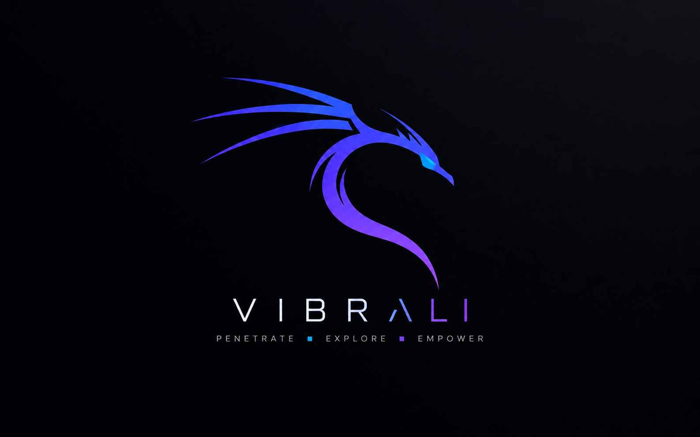

Rolling security workstation
Your security lab.
In your pocket.
A complete writable Linux system that boots from USB and travels between PCs. Your tools, configs, packages, projects and desktop stay with you.
V I B R A L I
ONE COMMAND
From blank USB to Vibrali.
The guided installer downloads the newest release, verifies it, lets you choose the target drive and shows write progress.
$
curl -fsSL https://mixutin.github.io/Vibrali/install.sh | bash
Heads up.
Installing to USB erases the selected device. Vibrali shows the model, size and serial
and requires an explicit confirmation before writing.
DOWNLOADS
Choose how you want to run it.
Portable USB
The main Vibrali experience. A complete external system with a real writable ext4 root filesystem.
Guided install →QEMU / KVM
Prebuilt QCOW2 disk for testing, labs and snapshots before you put Vibrali on hardware.
Download VM image →Build it yourself
Every package profile, branding file and build script lives in the public repository.
Browse source →VIBRALI DESKTOP
Dark, fast, and already yours.
XFCE ships preconfigured with Vibrali artwork, Arc Dark, Papirus Dark, JetBrains Mono, Starship and a cyan-violet terminal palette.
- Vibrali login, boot splash and GRUB identity
- Fastfetch on first interactive shell
- Fastfetch, Neofetch, Screenfetch and Inxi
- Minimal default wallpaper plus alternate Aurora artwork

Default wallpaper
TOOLING
Built for the whole security workflow.
Network
Nmap, Masscan, Wireshark, tcpdump, Bettercap, Socat and more.
Web
SQLMap, ffuf, Gobuster, Nikto, Wfuzz, WhatWeb and recon tooling.
Pwn
GDB, pwntools, GCC, Clang, NASM, Patchelf and QEMU user mode.
Reverse
LLDB, APKTool, Valgrind, binutils, strace, ltrace and ELF tooling.
Crypto
PARI/GP, SymPy, gmpy2, PyCryptodome, OpenSSL and Z3.
Forensics
Binwalk, Sleuth Kit, Autopsy, YARA, TestDisk and media utilities.
ARCHITECTURE
Not a live overlay.
A real installation.
Vibrali installs directly onto removable storage. Packages, kernels, /etc, /var, /opt and your home directory persist exactly as they do on a normal disk.
Read architecture docs →VIBRALI USB
│
├─ BIOS boot 1 MiB
├─ EFI system 512 MiB
│ └─ EFI/BOOT/BOOTX64.EFI
└─ VIBRALI_ROOT ext4
├─ /etc
├─ /var
├─ /opt
└─ /homeAUTHORIZED USE
Powerful tools. Clear boundaries.
Vibrali is built for CTFs, labs, administration, education and security testing where you have explicit permission. You are responsible for how you use it.